Lesespur: Secrets of the Chestnut Tree – Lesespurgeschichte mit Rätseln auf Englisch (Klasse 8)

Lesespur: Inside the Bunsen Burner – Lesespurgeschichte mit Rätseln auf Englisch (Klasse 9)
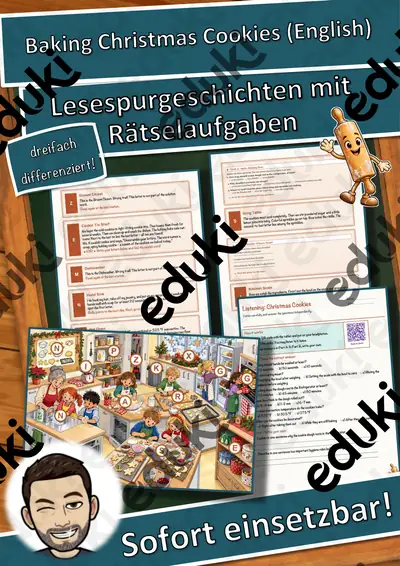
Lesespur: Baking Christmas Cookies – Lesespurgeschichte mit Rätseln auf Englisch (Klasse 8)

Lesespur: Lunar New Year at Lin's Home – Lesespurgeschichte mit Rätseln auf Englisch (Klasse 8)

Lesespur: The Apple Cellar – Lesespurgeschichte mit Rätseln auf Englisch (Klasse 6)
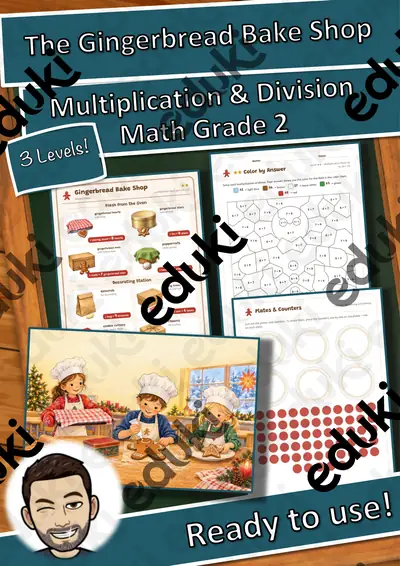
The Gingerbread Bake Shop – Rollenspiel Einmaleins und Teilen auf Englisch, 3-fach differenziert (Klasse 2)

Lesespur: The Quiet Snowy Forest – Lesespurgeschichte mit Rätseln auf Englisch (Klasse 6)

Lesespur: Christmas Tree Farm – Lesespurgeschichte mit Rätseln auf Englisch (Klasse 6)

Lesespur: Breaking Through the Ice – Lesespurgeschichte mit Rätseln auf Englisch (Klasse 6)

Lesespur: Winter Wildlife Trail – Lesespurgeschichte mit Rätseln auf Englisch (Klasse 6)

Lesespur: Potato Harvest on the Farm – Lesespurgeschichte mit Rätseln auf Englisch (Klasse 6)

Lesespur: Inside an Apple Tree – Lesespurgeschichte mit Rätseln auf Englisch (Klasse 9)

Lesespur: Lantern Night Adventure – Lesespurgeschichte mit Rätseln auf Englisch (Klasse 7)

Lesespur: Bonfire Night: ein Herbstfest in England – Lesespurgeschichte mit Rätseln (Klasse 7)

Lesespur: Halloween: woher das Fest kommt und wie man es in Irland feiert – Lesespurgeschichte mit Rätseln (Klasse 3)
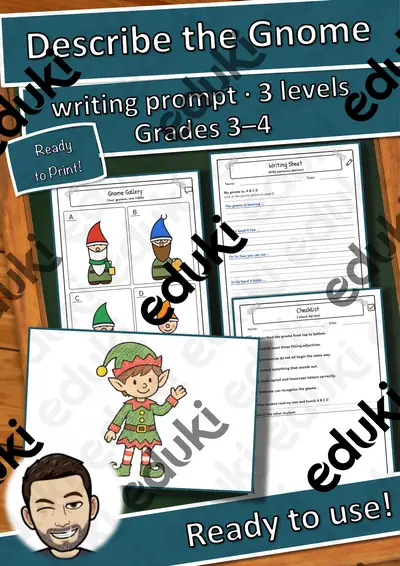
Describe the Gnome: Descriptive Writing Prompt with 4 Pictures, Word Bank and Checklist (Grades 3-4)
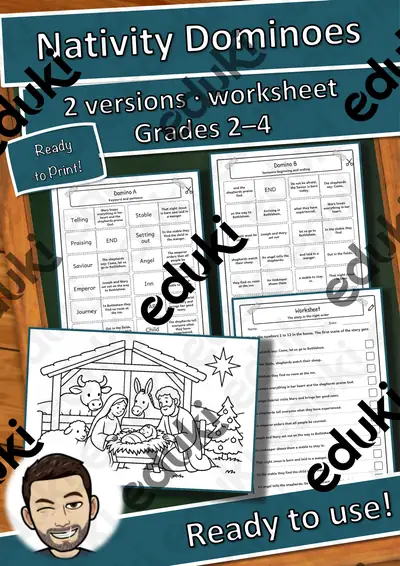
The Nativity Story as Dominoes: 2 Versions with Keywords and Sentences (Grades 2-4)
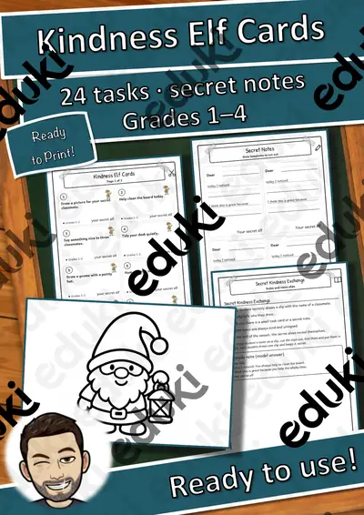
Secret Kindness Elf Cards: 24 Kindness Tasks, Secret Notes and Name Slips for the Class (Grades 1-4)

Holiday Countdown Calendar for the Classroom: 24 Doors, Idea Cards and Class Plan (Grades 1-4)
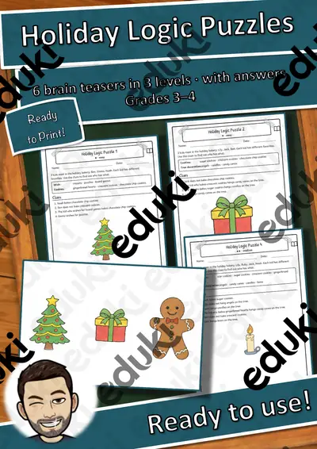
Holiday Logic Puzzles: 6 Brain Teasers at the Cookie Bakery in 3 Levels (Grades 3-4)

Winter Logic Puzzles: 6 Snowy Brain Teasers in 3 Levels (Grades 3-4)
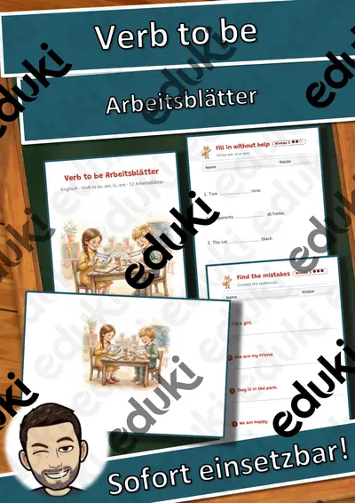
Verb to be: Arbeitsblaetter-Paket mit Loesungen
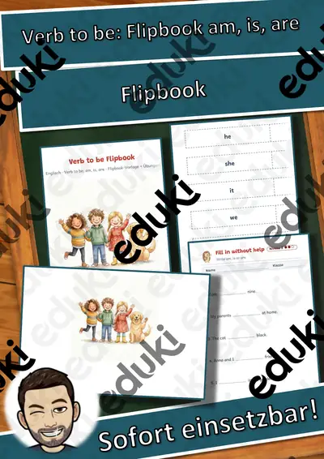
Verb to be: Flipbook am, is, are

Halloween Activity Booklet Englisch
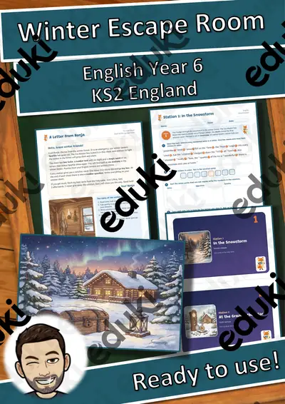
Winter Escape Room, English Year 6 (KS2): 6 Stations, 2 Locks, 1 Magic Word (FREE)
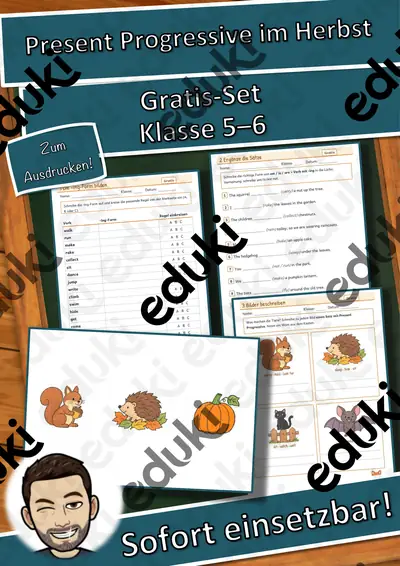
Englisch-Werkstatt: Present Progressive im Herbst – kostenlos, Klasse 5–6

Englisch-Werkstatt: Idioms: Englische Redewendungen – kostenlos, Klasse 3–4
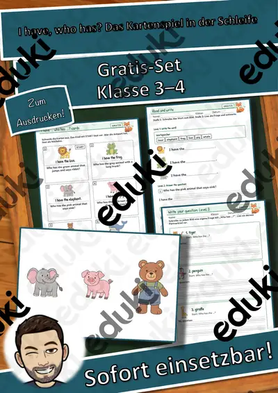
Englisch-Werkstatt: I have, who has? Das Kartenspiel in der Schleife – kostenlos, Klasse 3–4
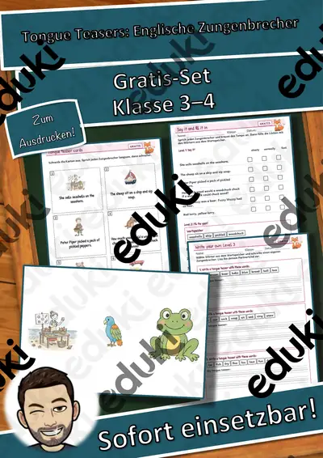
Englisch-Werkstatt: Tongue Teasers: Englische Zungenbrecher – kostenlos, Klasse 3–4

Englisch-Werkstatt: All about me: Ich stelle mich vor – kostenlos, Klasse 3–4
Keine Materialien gefunden – versuch einen anderen Suchbegriff oder Filter.
Englisch zum Mitmachen
Englisch lernt man, indem man spricht. Für die Grundschule gibt es daher die Englisch-Werkstatt: Spiele und Karten, die zum Sprechen auffordern. „I have, who has? Das Kartenspiel in der Schleife“, „Tongue Teasers: Englische Zungenbrecher“, „All about me: Ich stelle mich vor“ und „Idioms: Englische Redewendungen“ brauchen kaum Vorbereitung. Daneben gibt es „Verb to be“ als Arbeitsblattpaket und „Halloween Activity Booklet Englisch“.
Klasse 5 bis 7: Geschichten und Rätsel
In der Sekundarstufe stehen englische Lesespuren im Zentrum, in denen eine kurze Geschichte in Stationen erzählt wird. Titel wie „The Apple Cellar“, „The Quiet Snowy Forest“, „Christmas Tree Farm“ und „Breaking Through the Ice“ eignen sich für Klasse 6, „Lantern Night Adventure“ und „Bonfire Night“ für Klasse 7. Für Klasse 5 und 6 gibt es einen Winter-Escape-Room. Auch „Klassenarbeitstrainer Englisch Klasse 7“ zu Present Perfect und Future liegt vor.
Klasse 8 bis 10: Lesen, Mediation, Prüfung
Spätere Jahrgänge lesen anspruchsvoller: „Secrets of the Chestnut Tree“, „Baking Christmas Cookies“ und „Lunar New Year at Lin's Home“ in Klasse 8, „Inside the Bunsen Burner“ und „Inside an Apple Tree“ in Klasse 9. Für die Abschlussprüfung gibt es „VERA 8 Englisch Probetest Reading Klasse 8“ und „MSA Englisch Klasse 10 Probeprüfung“ mit Reading, Mediation und Writing auf Niveau B1.
Länderkunde: USA
Zu den Vereinigten Staaten gehört eine Reihe von Steckbriefen, die die Bundesstaaten einzeln beschreibt, zum Beispiel „Steckbrief Wisconsin“ oder „Steckbrief Vermont“, dazu ein „Materialpaket Steckbriefe Bundesstaaten der Vereinigten Staaten“.
Häufige Fragen
Sind die Materialien auf Englisch oder auf Deutsch?
Das Lernmaterial ist englisch, Arbeitsanweisungen und Hinweise für Lehrkräfte sind in der Regel deutsch. Für englischsprachige Lehrkräfte gibt es separate Fassungen im TpT-Bereich.
Eignet sich das Material für die Grundschule?
Ja, die Werkstatt-Reihe ist für Klasse 3 und 4 gedacht. Die Karten- und Sprechspiele kommen ohne Vorkenntnisse aus.
Gibt es Material zur Prüfungsvorbereitung?
Ja, mit einer Probeprüfung für den Mittleren Schulabschluss und einem Reading-Test für VERA 8.
Wo finde ich US-Länderkunde?
In den Steckbriefen zu den Bundesstaaten. Sie lassen sich als Sammlung oder einzeln einsetzen.